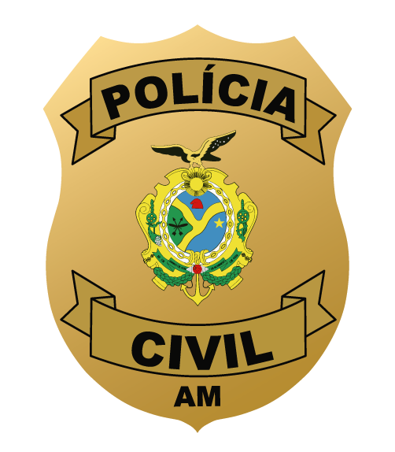
Fogo ForenseNIPED · PCAM/DPTC Em campo Uso de IA Solicitar acesso EntrarO Fogo Forense acompanha os focos de calor detectados por satélite em todo o estado, cruza cada ocorrência com desmatamento, áreas protegidas, histórico do local e clima, e indica quais merecem verificação primeiro. Atualizado a cada 10 minutos — no escritório e em campo, pelo celular.
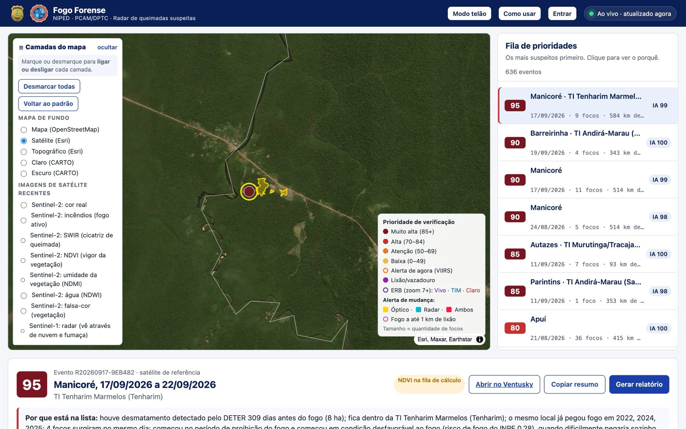
Uma ferramenta de apoio à investigação de crimes ambientais com fogo, desenvolvida pelo NIPED da Polícia Civil do Amazonas com o Departamento de Polícia Técnico-Científica.
Entre milhares de focos por temporada, ordena os eventos com mais sinais de ação humana intencional, para orientar onde olhar primeiro.
Imagens de satélite antes e depois, perda de vegetação, severidade da queima, clima no início do fogo e cronologia das detecções num só lugar.
Faz a análise de satélite que faltar, redige o parecer e monta o PDF: área de interesse, gráfico de NDVI, consulta a CAR, UC, TI, quilombolas, embargos e mineração, e matriz de hipóteses.
No celular, mostra onde você está, analisa o local pelo GPS ou por coordenadas digitadas e gera o relatório do ponto durante o exame.
Um motor automático roda a cada 10 minutos, sem intervenção, e publica o resultado no painel.
Baixa os focos de calor do INPE e da NASA (VIIRS/MODIS), os alertas DETER, o clima e o vento.
Junta focos próximos no espaço e no tempo em eventos de fogo, cada um com sua cronologia.
Compara cada evento com desmatamento prévio, terras indígenas, unidades de conservação, reincidência, período proibitivo e condição do tempo, e calcula a prioridade de verificação. Uma IA aponta os eventos atípicos.
Para os eventos prioritários, analisa a série de imagens Sentinel-2 e Landsat (NDVI e dNBR) e o radar Sentinel-1, que vê através de nuvem e fumaça.
A prioridade só ordena o trabalho: não é grau de certeza nem prova. A matriz de hipóteses apresenta, lado a lado e sem pesos, os elementos favoráveis à ignição intencional, os compatíveis com acidente ou queima tradicional e as lacunas, seguindo os guias de metodologia do NIPED.
O mesmo sistema funciona no celular durante o exame de local: localiza a equipe, analisa o ponto exato e entrega o relatório ali mesmo.
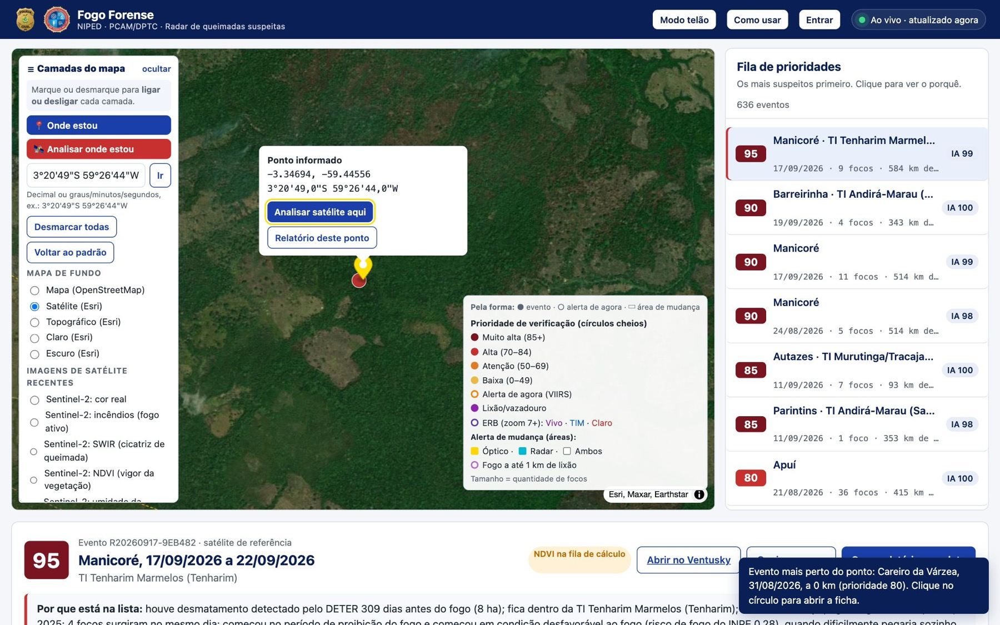
O mapa vai até a sua posição pelo GPS e acompanha enquanto você se desloca, com o círculo de precisão. Avisa qual evento de fogo está mais perto.
Um toque: pega a posição e analisa dois anos de imagens Sentinel-2 e Landsat do local, em 1 a 3 minutos.
Aceita decimal (-3,347, -59,446) ou graus, minutos e segundos (3°20'49"S 59°26'44"W) e corrige o sinal esquecido. O ponto ganha os atalhos Analisar satélite aqui e Relatório deste ponto.
Sem evento de foco por perto, sai o relatório do ponto de interesse, com análise de satélite, parecer e consulta às bases. Salva em PDF no próprio celular.
Dicas: precisa de internet (dados móveis bastam). Em área sem sinal, anote as coordenadas e gere o relatório ao voltar. Mantenha a tela ligada enquanto a análise roda.
A IA entra em pontos específicos e sempre identificada. As decisões de prioridade e os cálculos de satélite seguem regras e métodos publicados, que podem ser conferidos e reproduzidos.
Um modelo de aprendizado de máquina (Isolation Forest) compara cada evento com todos os outros da temporada — focos, duração, simultaneidade, desmatamento, reincidência, área protegida, distância, floresta, conversão e fogo histórico do MapBiomas — e dá uma nota de 0 a 100 para o quanto ele foge do padrão. A nota aparece ao lado da prioridade e não a altera.
Um modelo de linguagem (Google Gemini) redige o parecer a partir dos números já calculados: série de NDVI, quebra, severidade da queima, clima e indicadores. Ele não inventa fatos, não atribui autoria, apresenta as hipóteses sem pesos, cita a literatura científica e declara as limitações. Exige revisão de perito antes de qualquer uso.
Produto do Brasil MAIS, da Polícia Federal, não do Fogo Forense: indica o local provável de início da queimada, só em vegetação primária. Aqui ele entra como hipótese espacial a confrontar em campo, nunca como ponto de ignição demonstrado.
Agrupamento dos focos em eventos (DBSCAN), prioridade de verificação (indicadores explícitos), NDVI, quebra e dNBR (Rouse et al., 1974; Zhu e Woodcock, 2014; Key e Benson, 2006), conversão de floresta e fogo histórico (MapBiomas), hora da 1ª detecção GOES, matriz de hipóteses e consulta às bases.
Não decide prioridade, não acusa ninguém, não conclui origem, causa ou autoria e não substitui o exame de local. Origem, causa e autoria exigem demonstrações próprias, como orientam os guias do NIPED.
Os alertas do Brasil MAIS e os dados de quem usa o sistema não são enviados ao modelo de linguagem. Ele recebe apenas os números da análise de satélite e os indicadores públicos do evento.
Clique numa imagem para ampliar.
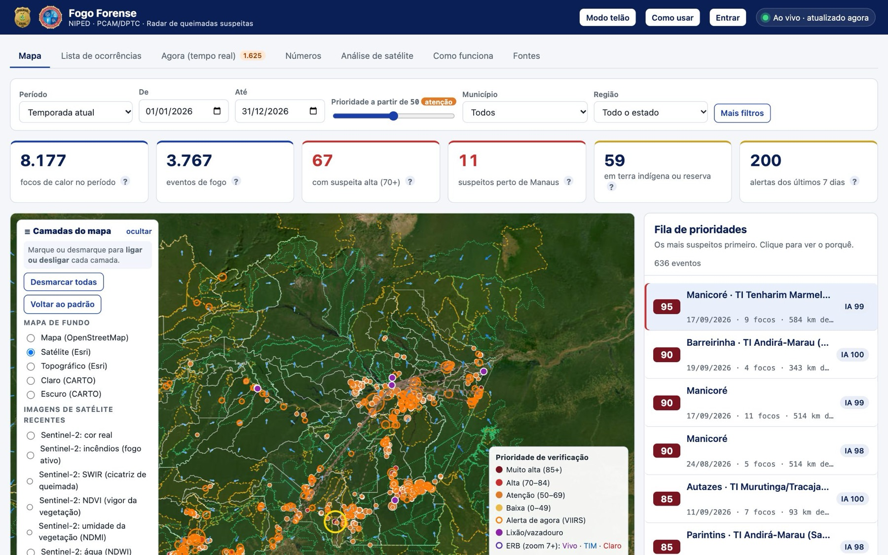
Visão do estado com os números da temporada: focos, eventos, suspeitas altas, ocorrências perto de Manaus e em áreas protegidas.
Eventos coloridos pela prioridade sobre imagem de satélite, com camadas que se ligam e desligam.
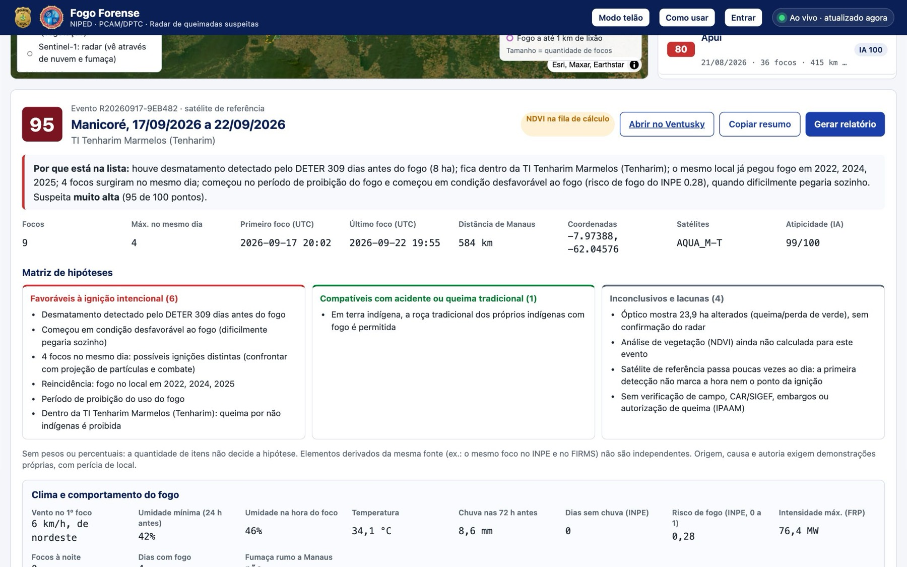
Explica em linguagem simples por que o evento entrou na lista e reúne focos, coordenadas, satélites, clima no início do fogo e cronologia das passagens.
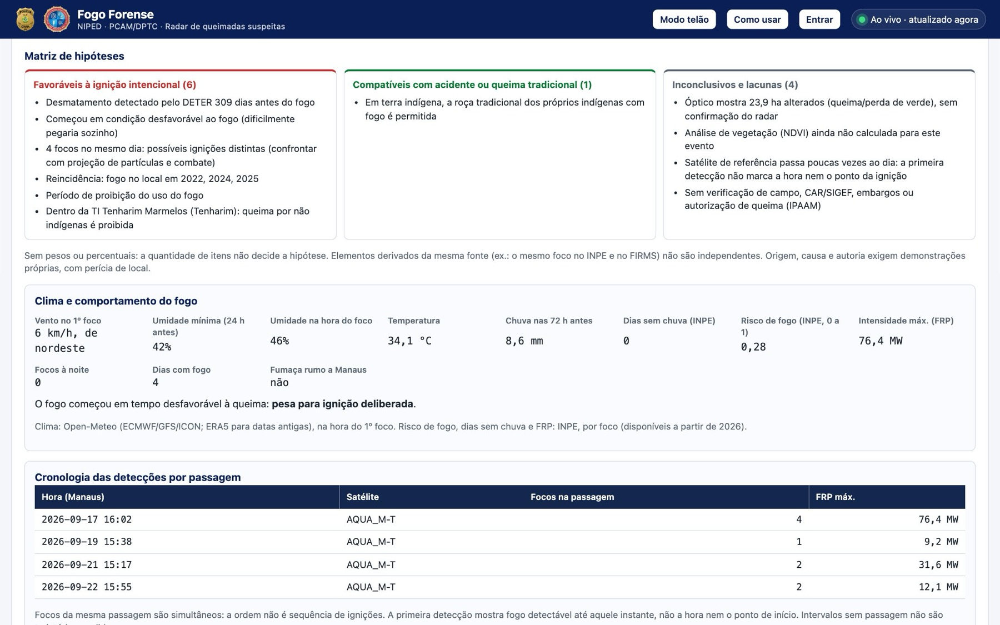
Separa o que favorece a ignição intencional, o que é compatível com acidente ou queima tradicional e o que ainda é inconclusivo. Origem, causa e autoria exigem demonstrações próprias, com perícia de local.
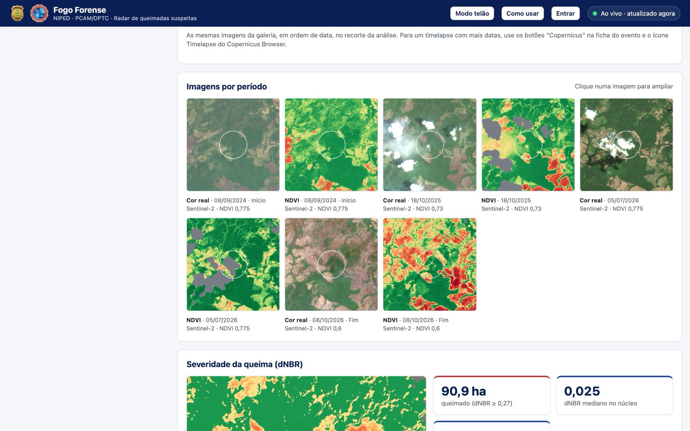
Imagens antes e depois do fogo, série de NDVI com linha de base e detecção de quebra, e mapa de severidade da queima (dNBR), com a proveniência de cada cena.
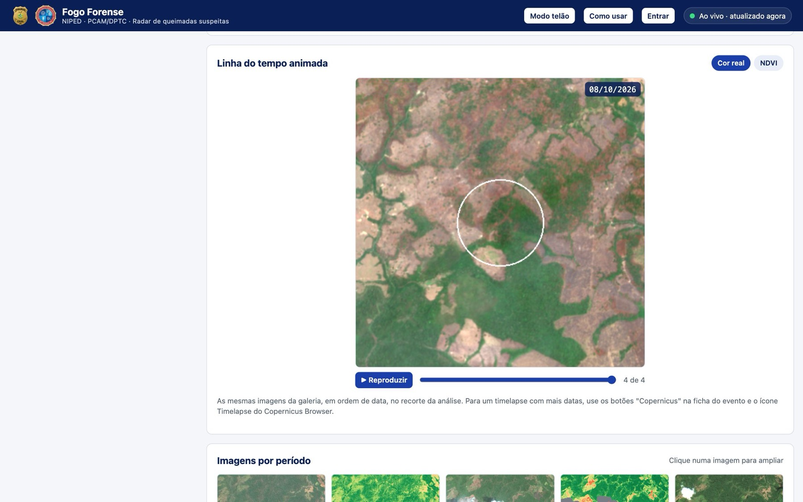
As imagens do local passam em sequência, da mais antiga à mais recente, mostrando a área antes e depois do fogo. Dá para pausar, arrastar até uma data e alternar entre cor real e NDVI.
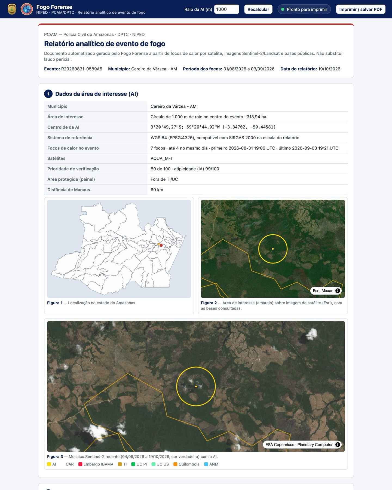
O botão Gerar relatório completo faz a análise de satélite que faltar, redige o parecer e monta o documento pronto para imprimir ou salvar em PDF, com barra de progresso.
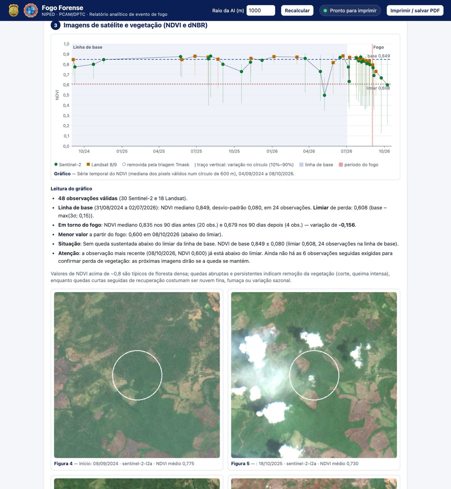
A série de dois anos de imagens, com linha de base, limiar de perda, período do fogo e intervalo da quebra marcados, separando Sentinel-2 e Landsat.
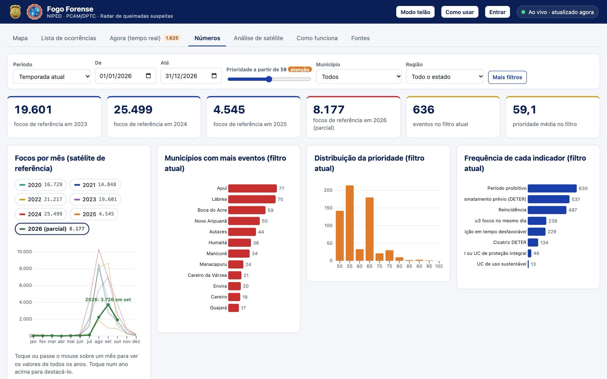
Focos por mês e por ano, municípios mais afetados e satélites, para acompanhar a temporada e comparar com anos anteriores.
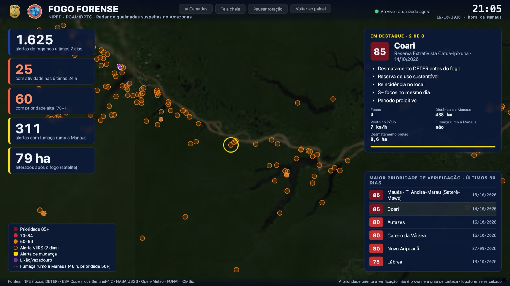
Tela para projetor ou TV de sala de situação: mapa em tela cheia, eventos em destaque em rotação e os indicadores das últimas 24 horas e 7 dias.
Bases oficiais e abertas, combinadas automaticamente.
O Fogo Forense contém dados de convênio e informações sensíveis para investigação, por isso o acesso é restrito e cada cadastro é analisado pela administração do NIPED.
Senha: já dentro do sistema, use Trocar senha no topo. Se esquecer, peça à administração do NIPED: você recebe uma senha temporária e cria uma nova no primeiro acesso.
Profissionais que atuam com crimes ambientais no Amazonas. Informe o órgão e o cargo: cada pedido é avaliado individualmente pela administração do NIPED.